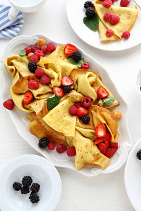
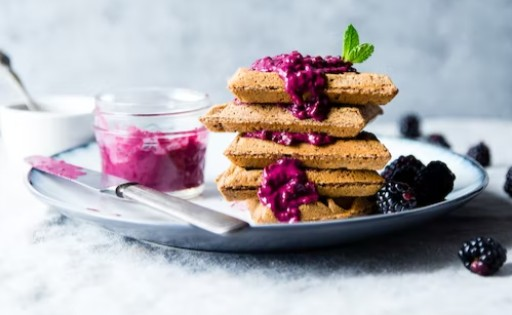
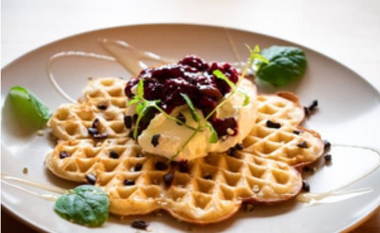
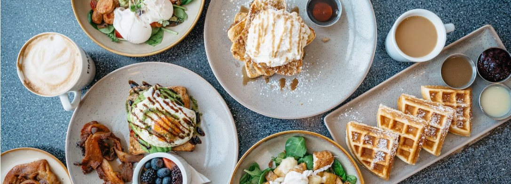

Display and Arrangement
Let's take a look at some creative ways to enjoy waffles!
How will you prepare to eat the waffles? We can drip some jams, honey, and fruit. Instead of eating directly, we can eat like this:
1. Ice cream cookies.
2. Pie crust.
3. Crepe.
4. Millefeuille
5. Waffle sandwich
6. Add jams into waffles batter.
7. Make a salad with a small waffle…etc.
Have you eating like this?
Add some YOGA fruit!
May be you want some Ice Cream~

See how we place it!
Hmmm! Yammy! Hey! Do you have any idea? Please share with us your special eating way and attach the photo. With this experience, you are creating your style and life attitude. Congratulations! To get more information or provide your ideas, please get in touch with us 😊